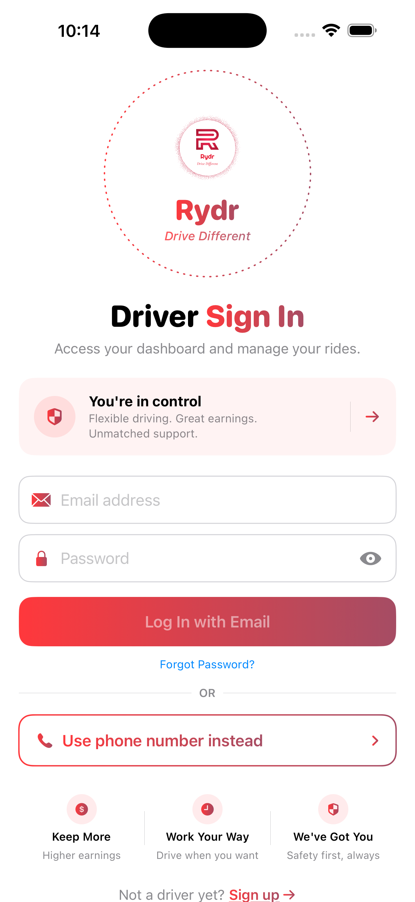

Deliberate rate editing
Per-mile and per-minute rates are being made explicit, editable, and saved with clear feedback.
Rydr for drivers
Rydr is preparing a driver experience focused on deliberate rate settings, onboarding review through Mission Control, live ride notifications, and safety accountability that can be appealed.

Driver operating system
Rydr is building driver features around the work drivers actually need to manage before and during a shift.
Per-mile and per-minute rates are being made explicit, editable, and saved with clear feedback.
Ride requests, missed requests, demand updates, safety decisions, and appeal updates can surface in-app.
Driver approval and beta background-check bypass decisions belong to admins, not the driver menu.
Drivers can view penalty markers, report incidents, and appeal concerns while Mission Control reviews supporting analytics.
Real driver app screens
The site uses fresh screenshots from the driver app build so the public story matches the TestFlight product.

Driver beta
Driver beta approvals are reviewed through Mission Control. You will receive email confirmation and TestFlight instructions if approved.